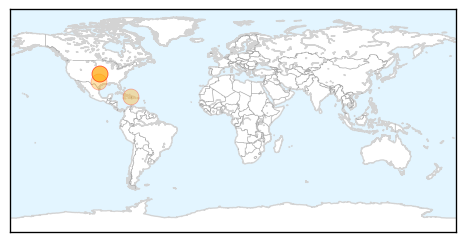
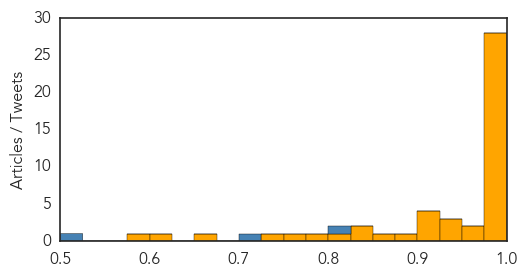

Chikungunya
30-Day Web Trend
1 alerts, 0 warnings
30-Day Twitter Trend
0 alerts, 0 warnings
Article Locations
Article Confidences

Top Articles:
- 0.998
- Blood tests for Chikungunya virus and rheumatoid arthritis could produce similar results
- 0.982
- Mosquito-borne Chikungunya Virus Presents Similar to Rheumatoid Arthritis
- 0.977
- Chikungunya And Rheumatoid Arthritis Share Similar Symptoms And Test Results
- 0.976
- Travel History of Patients may Help Distinguish Chikungunya from Rheumatoid Arthritis
- 0.966
- Chikungunya presents similar to Rheumatoid Arthritis
Top Tweets:
-
No tweets found for Jan 31, 2015
Ebola
30-Day Web Trend
0 alerts, 0 warnings

30-Day Twitter Trend
2 alerts, 0 warnings

Article Locations

Article Confidences
Top Articles:
- 1.000
- Ebola: third UK healthcare worker treated for virus
- 1.000
- Ebola outbreak: BA and Whitehall pushed to restart direct flights to virus-hit countries
- 1.000
- Ebola health worker flown back to UK after needle accident with patient in Sierra Leone
- 1.000
- Ebola: timeline of a ruthless killer - Sierra Leone
- 1.000
- Ebola worst may be over
- 0.999
- Ebola: military healthcare worker returns to UK after needle injury
- 0.999
- Brit flown back to UK after exposure to Ebola
- 0.999
- New British Ebola case as military healthcare worker is flown back for monitoring
- 0.999
- New British Ebola case as military healthcare worker is flown back for monitoring
- 0.999
- Ebola Could Be in California Capital
- 0.998
- Ebola Fears For British Military Medic After 'Needle Injury'
- 0.998
- Fort Bend Southwest Star Newspaper
- 0.998
- Breaking News: British Ebola nurse flown back to UK
- 0.996
- British military nurse flown to UK after it was "likely" they were infected with ebola
- 0.996
- Liberia delays school reopening by two weeks as Ebola cases fall
- 0.996
- Ebola: UN Urges More Help as Hundreds Are Tracked in Mali
- 0.996
- Liberia delays school reopening by two weeks as Ebola cases fall
- 0.995
- Ebola Outbreak: UK military healthworker in 'needle-stick injury' evacuated from Sierra Leone
- 0.994
- UK military healthcare worker admitted to Royal Free for ebola checks
- 0.994
- Health agencies elect not to mention possible Ebola case
- 0.993
- British military nurse flown back to UK after 'needle injury' treating Ebola victim
- 0.993
- British nurse exposed to deadly Ebola virus whilst working alongside Plymouth troops
- 0.993
- British worker flown home after needle jab in Ebola-infected Sierra Leone
- 0.988
- New Africa Regional Chief Aims to Shake Up Maligned WHO Office
- 0.986
- Ebola’s public health message: Sanitation is critical to containing the disease
- 0.984
- Ebola epidemic far from over, but tide is turning
- 0.979
- WHO: Prepare for Ebola
- 0.976
- British healthcare worker to be monitored for Ebola
- 0.967
- Briton flown to UK from Sierra Leone after ebola-needle prick
- 0.955
- UNMC Public Health Dean to Work in Sierra Leone on Ebola
- 0.937
- Dr Rebecca Moeti Appointed New Africa Regional Director for WHO
- 0.931
- International Meet in March to Plan Rebuilding of Ebola-hit States
- 0.928
- Second patient hospitalized in California undergoes Ebola testing
- 0.925
- Africa gets first woman WHO Director
- 0.921
- Bats challenge patients for space at health facility
- 0.912
- China sets up first high security bio lab
- 0.908
- Dr Moeti is new WHO Regional Director for Africa
- 0.878
- Littlehampton medic relives his time fighting Ebola epidemic
- 0.858
- Presidential rewards for Ebola cover up in Koinadugu – Chief Justice sacked
- 0.837
- AU Stresses Need For International Action Against Boko Haram, Ebola
- 0.833
- Kenya : Ebola crisis exposed African health institutions' weaknesses, says President Uhuru Kenyatta
- 0.814
- Bridge of Hope assists in donation of aid truck to Sierra Leone
- 0.790
- A British healthcare worker is being monitored for ebola, it has emerged
- 0.764
- New Africa Regional Chief Aims to Shake Up Maligned WHO Office
- 0.733
- Africa looks to extend new disaster insurance to Ebola-like epidemics
- 0.656
- Uganda sued over plan to ‘export’ 240 health workers
- 0.602
- AU leaders gather for conflict, Ebola talks
- 0.583
- UN chief calls for solidarity against Ebola to remain on course
Top Tweets:
- 0.804
- Ebola virus samples from this outbreak are 97% similar to the virus that first emerged in 1976. http://t.co/5XFnCWxv4C
- 0.709
- RT: Latest Ebola No.s from. Change in total/death/confirmed G: -1/+2/+4 L: 0/0/0/ SL: +24/+9/+12 TOTAL: 22159/8844/13278…
- 0.516
- No evidence that Ebola virus is mutating to become more contagious or more easily spread. http://t.co/03kFx5lApN